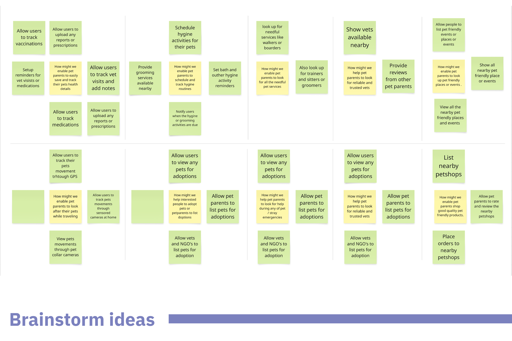
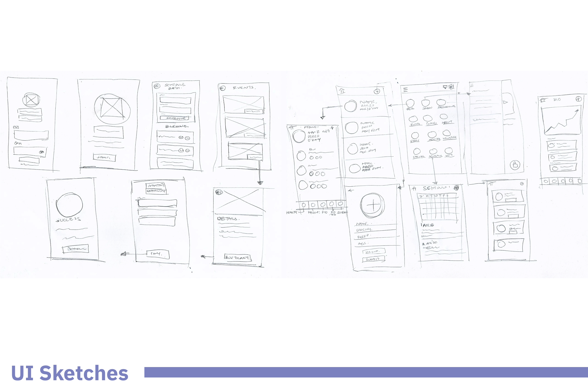
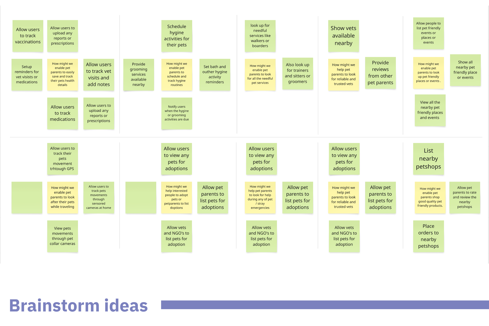
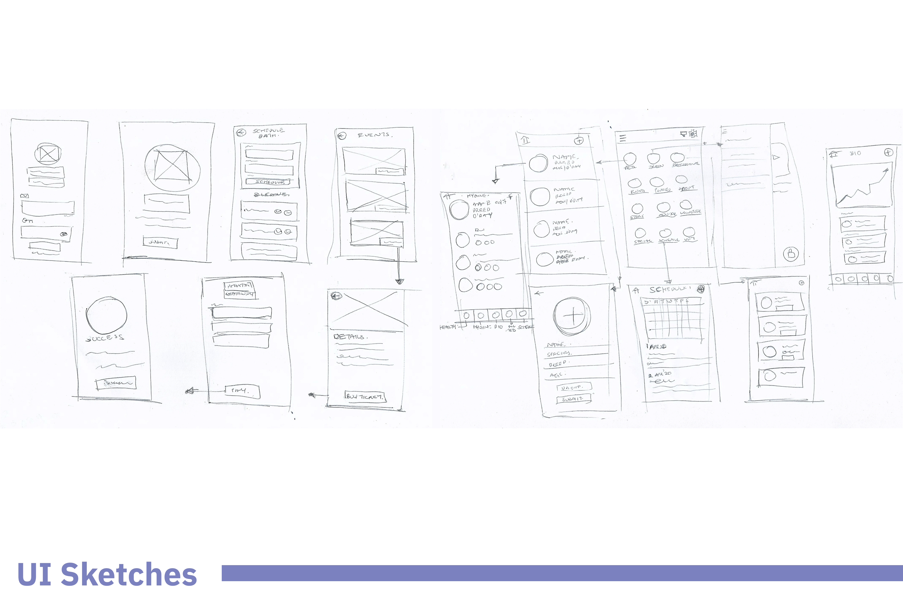

Pet industsry - mobile application
Everyhing Pets
Role
IC Product designer
My contribution
Conducted primary user research, by reaching out to pet owners socially, conducted user interviews to understand their needs with regards to pet care.
Conducted secondary desk research to better understand pet industry and the competative landscape of the existing apps, their features and services.
Synthesised research through user persona, affinity mapping, defined users current jouney phases through juourney mapping, identifying their painpoints at each phases of their journey.
Defined MVP scope and requirements, determined information architecture. Defined style guide a playful neumorphism UI, look and feel of the application, designed wireframes, prototyped and conducted usability testing.
Key outcomes
Design and prototyped mobile application, with the definde scope and requirements for the MVP, got users feedback, through usability testing, and defined next steps.
Overview & approach
Assignment overview
The pet care space lacks a unified, reliable solution that connects pet owners with a broad network of services — including vets, groomers, boarders, walkers, sitters, NGOs, and community resources. Existing platforms are often fragmented and fail to deliver a seamless, pet-centric experience.
This project aimed to design a comprehensive pet care app that brings together essential services, professionals, and advocacy groups into a single, user-friendly ecosystem. With a focus on functionality, feasibility, and usability, the goal was to create a solution that supports both pet and stray care while fostering community awareness and engagement.
Projects
1
Mobile application
Design team
1
IC Product designer
Discover
Primary research - User interviews
Secondary research - Pet industry & competitive landscape
Define & Ideate
Persona
Empathy mapping
User journey mapping
Brainstorm ideas
Define MVP scope
Prototype & Test
Sitemap
Lo-Fi & Hi-Fi wireframes
Mockups & prototypes
Usability testing
Discover
Primary research findings
I started by defining clear research goals to ensure that our questions would uncover valuable insights. The primary objective was to understand how pet owners currently manage their pets' daily care, hygiene, health check-ups, and emergencies. Reached out to 6 pet parents from urban and suburban regions and conducted 60 mins + interviews.
I also aimed to explore the challenges they face, their reliance on digital tools, I crafted a questionnaire that progressively moved from becoming a pet parent, general pet ownership habits to specific pain points, technology usage, and feature expectations. Following were the key pain points that emerged.
Tracking pet health
Individuals struggled with the safety and healthcare issues regarding their pets .
Tracking hygiene routine
Individuals often faced difficulty to keep track of their pets hygiene & medical activity.
Pet friendly places & services
Individuals struggled finding pet friendly places, services and activities to spend more time with their pets.
Pet sitting
Individuals were always worried about their pets safety and well being when away from home.
Emergencies
Individuals were confused about how and where to find the right professional help in emergencies, when their vet were unreachable or while travelling.
Discover
Competitive Landscape
To better understand the competitive landscape of pet care applications, I conducted a competitive analysis of the top 10 pet apps in the market. The goal was to identify key trends, strengths, and gaps in existing solutions, helping us position our app effectively.
By analysing features, user experience and pricing models, against the user interview findings, we gained valuable insights into what works well and where opportunities for improvement exist. This analysis not only informed our product strategy but also ensured that our app would offer a more comprehensive, user-friendly, and innovative solution for pet owners.
1. The Gap in Emergency Pet Services
Most pet apps lack emergency vet services, leaving a critical gap for real-time vet availability, urgent care features. Adding these could improve trust and engagement.
2. Limited Focus on Hygiene & Wellness Tracking
While some apps track health, hygiene routines like baths, grooming, and flea prevention are often missing. A feature-rich hygiene tracker with smart reminders could be a strong differentiator.
3. The Lack of personalisation
Most apps provide generic pet care tools instead of tailored recommendations based on breed, age, and health history. Hyper-personalisation with smart alerts and adaptive dashboards could enhance user experience and loyalty.
4. Fragmented Services
Pet owners juggle multiple apps for health tracking, training, vet bookings, and shopping. A super app combining these could streamline pet care and dominate the market.
Define & ideate
Synthesising research
Persona
To anchor the design in real user needs, I created a detailed persona representing the core behaviors, goals, and pain points of a typical pet owner. This persona helped humanize the user, allowing me to stay focused on their perspective throughout the process. It was based on insights gathered from generative research, highlighting both functional expectations and emotional drivers behind pet care decisions.
Empathy Map
The empathy map allowed me to go deeper into the user’s mindset by visualizing what they say, think, feel, and do. This tool helped uncover unspoken frustrations and needs—especially around trust, accessibility of services, and care for strays. It played a key role in informing more empathetic design decisions by surfacing user motivations and pain points that personas alone couldn't capture.
User journey map
Mapping the user’s journey across various scenarios revealed critical moments where users struggle—like searching for reliable service providers, handling emergencies, or caring for strays. This phase helped identify gaps in existing workflows and illuminated opportunities for meaningful intervention through design. It also served as a bridge between research insights and design planning.
Define & ideate
HMW's & ideas
 



HMW's
I converted the key user pain points into “How Might We” questions to reframe challenges into opportunities. These questions sparked focused ideation and helped align design goals with user and business value. They ranged from “How might we simplify access to trusted pet care services?” to “How might we assist pet or stray emergencies?”
Brainstorm Ideas
Using the HMWs as a springboard, I used a focused, individual brainstorming approach to explore solutions. I mapped out ideas for each "How Might We" statement on individual sticky notes, allowing me to dive deep into every challenge. This method helped me generate a wide range of potential ideas.
UI sketches
Before jumping into high-fidelity design, I created quick UI sketches to explore layout ideas and interaction flows. This phase was crucial for visual thinking and allowed fast iteration on concepts. Sketching helped shape the app’s structure, especially around invisioning a complete pet care app/platform, pet profiles, and emergency tools, while ensuring alignment with usability goals.
Define & Ideate
Information architecture
The site map
To bring structure to the experience, I created a comprehensive site map outlining the core features and content hierarchy of the app. This helped clarify how users would navigate through different services—ranging from pet care bookings to community features and stray animal resources. The IA was informed by user needs identified during research, ensuring that key tasks like finding a vet or accessing adoption info were intuitive and accessible. This foundational structure helped guide both design decisions and future scalability of the platform.
Prototype & test
The big idea & MVP scope
The big idea
The app sets out to be a holistic pet care platform that empowers pet owners with everything they need — from discovering pet-friendly places and professionals to adopting, rescuing, volunteering, and even socializing their pets. It aims to build a vibrant ecosystem where pet parents can manage their furry friends' lives end-to-end: schedule activities, attend events, shop for essentials, monitor pets’ well-being, and connect with a wider pet-loving community. The long-term vision clearly goes beyond just utility — it’s about creating a connected, supportive, and joyful lifestyle for pets and their people.
MVP scope
The MVP is intentionally lean, focusing on validating the core idea and establishing essential functionality. It includes user onboarding and authentication, along with two foundational modules: My Pets — where users can manage pet profiles, and Schedule — to help plan pet-related tasks and activities. These core features lay the groundwork for user engagement, habit-building, and future scalability, without overwhelming users right out of the gate.
Prototype & test
Design
Lo-Fi wireframes
I used Balsamiq to develop low-fidelity wireframes that laid out the core user flows and key screens. These wireframes primarily focused on onboarding new users, setting up pet profiles, and navigating through essential health and hygiene features. The goal was to establish a clear structure and interaction model early on, allowing for quick iterations and feedback without getting caught up in visual design details. This phase helped shape the product’s functional backbone before moving into more refined design stages.
Style guide
The visual direction leaned into a soft, modern neu-morphism aesthetic, designed to reflect warmth, trust, and a sense of comfort—fitting for a pet care ecosystem. A gentle pastel-inspired palette was chosen to evoke friendliness and approachability, with hints of playfulness through brighter accents. The SF Pro typeface ensured clarity and elegance across interfaces, balancing function with personality. The overall style aimed to create a visual environment that felt both emotionally engaging and easy to navigate for users of all ages.
Hi-Fi Wireframes & prototyping
The visual direction leaned into a soft, modern neu-morphism aesthetic, designed to reflect warmth, trust, and a sense of comfort—fitting for a pet care ecosystem. A gentle pastel-inspired palette was chosen to evoke friendliness and approachability, with hints of playfulness through brighter accents. The SF Pro typeface ensured clarity and elegance across interfaces, balancing function with personality. The overall style aimed to create a visual environment that felt both emotionally engaging and easy to navigate for users of all ages.
Lo-Fi Wireframes
Style guide
Hi -Fi Wireframes
Prototype & test
Usability testing findings
As the final step , to validate the design and gather actionable feedback, I conducted a usability review of the interactive prototype with five users. This phase focused on observing how users navigated the core tasks, identifying any friction points, confusion, or unmet expectations.
The insights gathered helped highlight areas of improvement and informed possible refinements to enhance the overall user experience.
GUI
60% of users loved the neumorphism GUI , while 40% found it a bit confusing as some elements deemed to be buttons but were not clickable.
Accessibility
80% of the users found some text on health & hygiene screen unreadable.
The big idea validation
100% of the users found the features (future state) mentioned on the home screen to be helpful and much needed.
Breed information
40% of the users suggested, to have a feature to inform them a bit in depth about their based on their pets breed and how to take care of them better.
Pet profile customisation
40% of the users were curious about how they could edit or customise their pets profile after the initial setup.
Growth & learnings
Generative Research
This project gave me the opportunity to explore generative research methods to understand user behaviors, pain points, and needs from the ground up. Through open-ended surveys and informal interviews with pet owners and caretakers, I uncovered key motivations and emotional connections users have with their pets. This phase helped shape a foundation rooted in empathy, directly influencing product direction and feature prioritization.
2. Desk Research
I complemented primary research with thorough desk research, diving into reports, articles, and user-generated content across forums and social platforms. This secondary data helped validate findings from user conversations and provided broader context on pet ownership trends, emerging care practices, and gaps in service delivery. It was instrumental in framing a well-rounded problem statement.
3. Competitive Landscape
To gauge market trends and benchmarks, I analyzed 10 leading pet care apps. This exercise sharpened my eye for differentiators—what worked, what lacked, and where innovation was possible. Mapping features, UX patterns, and visual strategies helped identify whitespace in the market and informed how to position our app uniquely while ensuring usability and scalability.
Information Architecture
Crafting the information architecture was a key learning milestone. Organizing multiple services—from veterinary support to community engagement—into an intuitive, scalable structure was both challenging and rewarding. This step helped me better understand how to group complex content in a way that supports user mental models and simplifies navigation across diverse user goals.
Style Guide – Neumorphism UI
Experimenting with a neumorphic design style allowed me to explore modern, tactile UI trends while learning how to balance aesthetics with accessibility and usability. I developed a mini style guide to ensure consistency across components while iterating on visual hierarchy, contrast, and depth to create a soft yet interactive user experience
Usability Testing
I conducted usability testing with five users to evaluate the design prototype, documenting pain points and areas of confusion. Though the design wasn’t iterated post-testing, compiling actionable feedback and proposing improvements enhanced my ability to interpret user behavior objectively and present clear recommendations that future design cycles can build on.
Contact me
abhishek.taware.at@gmail.com
I’m always open to collaboration when time allows!
Currently, I work as a Sr. UX Designer at IBM iX, crafting
seamless experiences for users while delivering impactful outcomes
for businesses.
Schedule a call →
You can also look me up on